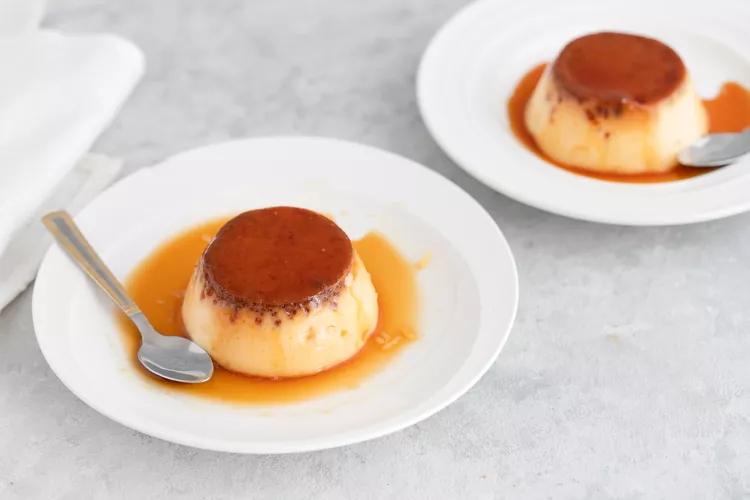

Purin (Japanese Custard Pudding)

Description
Purin is a flan-like cold custard dessert in Japan. The name “Purin” comes from “pudding”, but it is not the same thing as the gooey pudding in the U.S. It has a firmer texture similar to Mexican flan and also has caramel sauce on top. It is a very basic sweet—silky, creamy, rich, and smooth—that is served chilled, and adored in Japan. Purin is a comfort dessert for Japanese people.
Ingredients
- Butter, for the molds
- 3 tablespoons warm water, divided
- 6 tablespoons sugar
- 2 cups milk
- 2/3 cup sugar
- 1 teaspoons pure vanilla extract
- 4 large eggs
Directions
- Gather the ingredients.
- Butter individual pudding molds.
- Heat 2 tablespoons of water in a saucepan then add 6 tablespoons of sugar, and simmer until the sauce is browned. Carefully add 1 tablespoon of warm water to thin the sauce.
- Pour sauce into the molds.
- Put milk in a medium pan, and heat to about 140 F.
- Dissolve 2/3 cup sugar in the milk, and add vanilla extract.
- Remove from heat.
- Lightly beat eggs in a bowl.
- Gradually add warm milk to the egg mixture.
- Run the egg mixture through a strainer.
- Scoop out some bubbles from the surface of the strained egg mixture.
- Pour the remaining egg mixture over the sauce in the molds.
- Place the pudding molds in a steamer, and steam on low heat for about 15 to 20 minutes or until cooked through.
- Turn off the heat and let them cool.
- Remove pudding from the molds and serve on plates.
Source: https://www.thespruceeats.com/custard-pudding-recipes-2031113
Back to Home